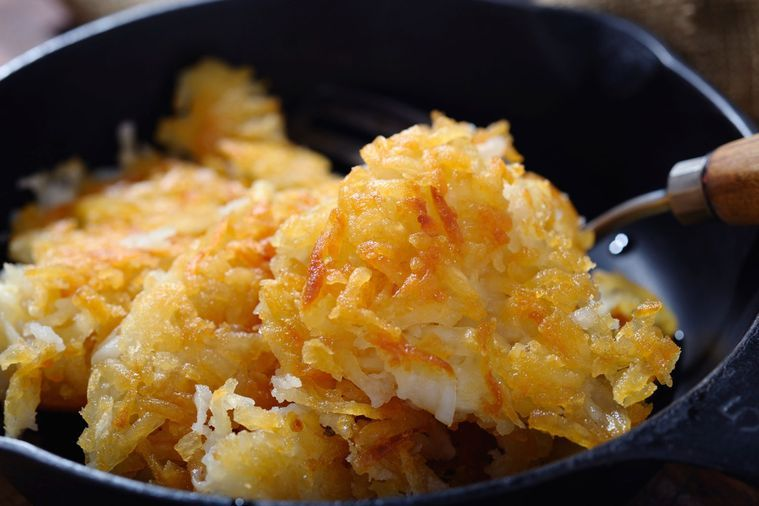

Hash Browns

Description
Hash browns are the perfect side dish for any breakfast and they're easier to make than you might think!
Ingredients
- 2 russet potatoes, shredded
- 1/2 white onion, chopped
- 1/4 cup flour
- 1 egg
- 1 cup oil
- salt and pepper to taste
Steps
- Rinse and dry the shredded potatoes
- Combine the potatoes, onion, egg, and flour in a bowl
- Heat 1/4 inch of oil in a skillet over medium-high heat
- Place the potatoe mixture into the pan in a 1/2 layer
- Cook until golden brown on each side
- Remove from pan and drain on paper towels
- Season with salt and pepper to taste